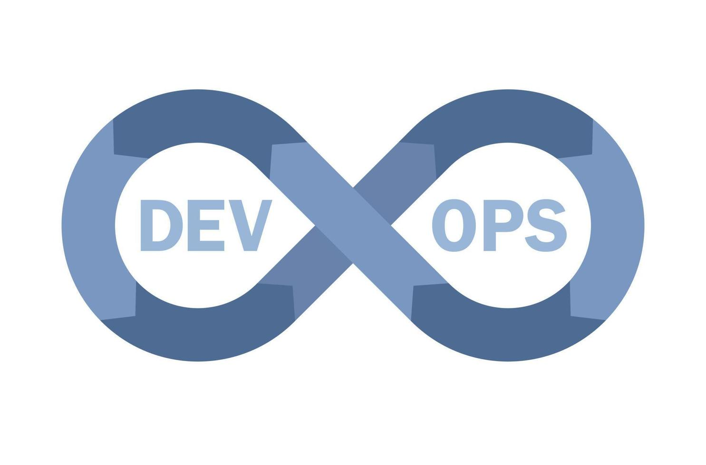
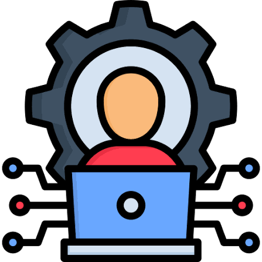

Lukmanul Hakim
Cloud & DevOps Engineer
Saya adalah seorang Cloud and DevOps Engineer dengan pengalaman lebih dari 7 tahun di bidang IT. Saya memiliki pengalaman dalam mengelola infrastruktur AWS, deployment berbasis container, CI/CD pipeline, server Linux, dan monitoring system.
Selain AWS, saya juga familiar dengan beberapa workload di Google Cloud Platform seperti Google Compute Engine dan GKE. Saya senang membantu tim development dengan membuat proses deployment yang lebih rapi, otomatis, dan mudah dipantau.
Fokus Bidang
Cloud Infrastructure

DevOps Automation

System Administrator
Pengalaman Kerja
| Perusahaan | Posisi | Lokasi | Periode |
|---|---|---|---|
| Rolling Glory | DevOps Engineer | Bandung, West Java | Oct 2023 - Present |
| PT Ebdesk Teknologi | System Engineer | Jakarta, Jakarta | Mar 2018 - Oct 2023 |
Tanggung Jawab Utama
- Mengelola cloud infrastructure terutama AWS, termasuk EC2 dan ECS.
- Membuat dan merawat CI/CD pipeline menggunakan GitLab CI dan GitHub Actions.
- Menjalankan aplikasi container menggunakan Docker, AWS ECS, dan Google Kubernetes Engine.
- Membantu troubleshooting masalah deployment, container, server, dan cloud.
Pendidikan
| Institusi | Jurusan | Lokasi | Tahun |
|---|---|---|---|
| Universitas Siber Asia | Informatics Engineering | South Jakarta, Jakarta | Apr 2026 - Expected Apr 2030 |
| SMK Negeri 1 Cimahi | Computer & Networking | Cimahi, West Java | Apr 2014 - Apr 2018 |
Sertifikasi
- AWS Certified Cloud Practitioner (Dec 2023 - Dec 2026)
- AWS Certified Solutions Architect - Associate (Mar 2026 - Mar 2029)
Technical Skills
- Cloud Platforms: AWS, Google Cloud Platform
- Containers: Docker, Kubernetes, AWS ECS, GKE
- CI/CD: GitLab CI, GitHub Actions, Jenkins, ArgoCD
- Automation: Terraform, Ansible
- Monitoring: Grafana, New Relic, Linux
Kontak
Bandung, Indonesia
Email: lukmanulhakim1412@gmail.com
Telepon: +6282320337833